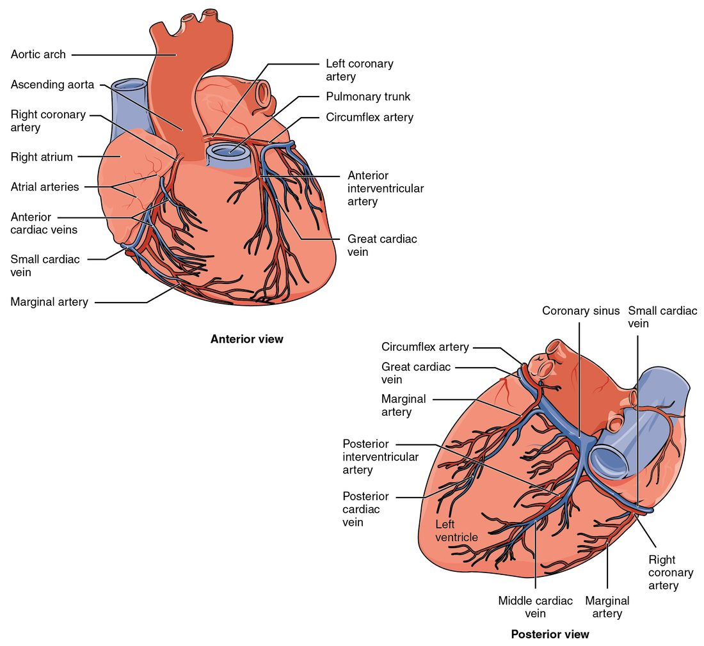

Blood flow through the heart and the two circuits
The right ventricle pumps deoxygenated blood through the low-pressure pulmonary circuit, where it picks up oxygen in the pulmonary capillaries; the left ventricle pumps oxygenated blood through the high-pressure systemic circuit.
Part 1 · Clinical hook
Why this matters
Mr. Reyes, 58, is shoveling snow when a crushing pressure spreads across his chest and down his left arm. It does not ease when he stops. In the hospital, a dye study shows a clot blocking the artery that runs down the front of his heart. Every minute it stays blocked, more of the muscle of his left ventricle dies.
Part 2 · Foundations
What this builds on
Part 3 · Prerequisite check
Quick check before you start
1. Which chamber pumps blood into the pulmonary trunk?
- Left ventricle
- Right atrium
- Right ventricle
Show the answer
The right ventricle pumps through the pulmonary valve into the pulmonary trunk. The left ventricle pumps into the aorta, and the atria pump only into the ventricles below them.
- Left ventricle:
- Right atrium:
- Correct: Right ventricle:
2. Which valve lies between the left atrium and the left ventricle?
- Mitral valve
- Tricuspid valve
- Aortic valve
Show the answer
The mitral valve is the left atrioventricular valve. The tricuspid is on the right, and the aortic valve guards the exit from the left ventricle.
- Correct: Mitral valve:
- Tricuspid valve:
- Aortic valve:
3. Which process in a cell uses oxygen and makes most of its ATP?
- Glycolysis
- Aerobic respiration
- Anaerobic metabolism
Show the answer
Aerobic respiration uses oxygen in the mitochondria and makes most of a cell's ATP. Glycolysis and anaerobic metabolism make only a little ATP and do not need oxygen.
- Glycolysis:
- Correct: Aerobic respiration:
- Anaerobic metabolism:
Part 4 · Anatomy panel
Anatomy

With labels hidden, select a box to reveal its label.
Part 5 · Causal chain
How it works, step by step
- A fatty plaque in the wall of the left anterior descending artery cracks, and a blood clot forms on it.The artery is suddenly blocked, and blood stops reaching the front of the left ventricle.
- Blood stops reaching that muscle, and the small anastomoses cannot carry enough blood around the block.The muscle fibers downstream become ischemic: their oxygen supply falls far below demand.
- Without oxygen, aerobic respiration in those fibers slows.The fibers make too little ATP, shift to anaerobic metabolism and produce lactate.
- Lactate and other chemicals from the starved muscle build up.They stimulate pain-sensing nerve endings, and the patient feels crushing chest pain.
- Severe ischemia lasts more than about 20 to 30 minutes.The fibers die (a myocardial infarction), release troponin into the blood, and are later replaced by scar tissue that does not contract.
Part 6 · Key ideas
Key ideas
- Oxygenated blood has just passed through the lungs; its hemoglobin is about 97 to 98% loaded with oxygen and it is bright red. Deoxygenated blood (de- = removed) has just passed through the tissues; at rest its hemoglobin is still about 75% loaded, so it is not empty of oxygen.
- The pulmonary circuit (pulmon- = lung) carries blood from the right ventricle through the lungs and back to the left atrium. The systemic circuit carries blood from the left ventricle to every other tissue and back to the right atrium.
- Systole (systol- = contraction) is the contraction phase of a heart chamber, and diastole (diastol- = expansion) is its relaxation phase, when it refills. When a textbook says systole alone, it usually means ventricular systole.
Part 7 · Core concept
Core concepts
Part 8 · Misconception
A common mistake
The wrong idea: Deoxygenated blood has no oxygen left in it, which is why it is blue.
What actually happens: At rest, blood returning to the heart is still about 75 percent loaded with oxygen; the tissues take only about a quarter of what arrives. No blood is blue. Deoxygenated blood is dark red, and veins only look blue through the skin because of how skin handles light. Diagrams use blue as a code.
Part 9 · Retrieval check
Check yourself
Anything you miss goes into your review queue.
1. A red blood cell from your big toe has just arrived at your heart through the inferior vena cava. Put the structures it passes through in order until it leaves the left side of the heart.
- Right atrium
- Right ventricle
- Pulmonary capillaries
- Left atrium
- Left ventricle
- Aorta
Show the answer
Blood from the legs returns through the inferior vena cava to the right atrium. The right ventricle pumps it to the pulmonary capillaries, where it picks up oxygen. It returns through the pulmonary veins to the left atrium, and the left ventricle pumps it into the aorta.
- Correct order: 1. Right atrium 2. Right ventricle 3. Pulmonary capillaries 4. Left atrium 5. Left ventricle 6. Aorta
2. Mr. Reyes, 58, has a clot completely blocking his left anterior descending artery near its start. Which region of his heart muscle is most at risk?
- The front of the left ventricle, the apex and most of the septum
- The right atrium and most of the muscular wall of the right ventricle
- The back of both ventricles and the rear third of the septum
- The left atrium and the side wall of the left ventricle
Show the answer
The left anterior descending (anterior interventricular) artery runs down the front of the heart. It supplies the front of the left ventricle, the front two thirds of the interventricular septum and the apex, so those regions lose their blood supply.
- Correct: The front of the left ventricle, the apex and most of the septum: Correct. This is the territory of the left anterior descending artery.
- The right atrium and most of the muscular wall of the right ventricle: The right atrium and most of the right ventricle are fed by the right coronary artery, which is not blocked here.
- The back of both ventricles and the rear third of the septum: The back of both ventricles is fed by the posterior interventricular artery, which in most people comes from the right coronary artery.
- The left atrium and the side wall of the left ventricle: The left atrium and the side wall of the left ventricle are fed by the circumflex artery, the other branch of the left coronary artery.
3. Over one minute, a person's right ventricle pumps out 5.0 liters of blood. About how much does the left ventricle pump out in the same minute?
- About 1.0 liter
- About 5.0 liters
- About 10.0 liters
- About 25 liters
Show the answer
The pulmonary and systemic circuits are connected in series: all the blood the right ventricle sends through the lungs returns to the left side. So over time the two ventricles pump the same volume, even though the left makes about five times the pressure.
- About 1.0 liter: If the left ventricle pumped only 1 liter while the right pumped 5, about 4 liters a minute would pile up in the lungs.
- Correct: About 5.0 liters: Correct. In series circuits, both pumps move the same volume per minute.
- About 10.0 liters: The left ventricle makes more pressure, not more volume. Pumping twice as much as the right would drain the lungs within minutes.
- About 25 liters: This multiplies the volume by the pressure ratio. Pressure and volume are different quantities: higher pressure does not mean a larger volume.
4. Ms. Lee, 64, gets a tight pressure in her chest when she climbs two flights of stairs. It fades after three minutes of rest. Her blood troponin level is normal. What best describes what is happening to her heart muscle?
- Heart muscle is dying and being replaced by scar
- Ischemia during exertion that reverses when she rests
- The pericardial sac is filling with blood
- Deoxygenated blood is mixing into the aorta
Show the answer
A narrowed coronary artery supplies enough blood at rest but not when exertion raises the muscle's oxygen use. The ischemia causes pain, and it reverses once demand falls. This is angina. Normal troponin fits: no muscle has died.
- Heart muscle is dying and being replaced by scar: Dying muscle is a myocardial infarction. Pain from an infarction usually lasts longer and does not ease with rest, and dying fibers release troponin, which is normal here.
- Correct: Ischemia during exertion that reverses when she rests: Correct. This is angina: ischemia that reverses when oxygen demand falls.
- The pericardial sac is filling with blood: Blood filling the pericardial sac would squeeze the heart and lower blood pressure, and it would not come and go with stair climbing.
- Deoxygenated blood is mixing into the aorta: In a healthy adult heart the right and left sides do not share blood. Nothing in her story suggests a hole between the chambers.
5. A tiny amount of dye is injected into the great cardiac vein. Where does the dye enter a chamber of the heart?
- The left atrium, through the pulmonary veins
- The right ventricle, through the anterior cardiac veins
- The left ventricle, through the aortic valve
- The right atrium, through the coronary sinus
Show the answer
The great cardiac vein drains into the coronary sinus, the wide vein in the coronary sulcus on the back of the heart. The coronary sinus empties into the right atrium.
- The left atrium, through the pulmonary veins: The pulmonary veins carry blood from the lungs. The heart's own veins do not drain into them.
- The right ventricle, through the anterior cardiac veins: The anterior cardiac veins are separate small veins on the front of the right ventricle, and they empty into the right atrium, not the right ventricle.
- The left ventricle, through the aortic valve: Blood does not enter the left ventricle through the aortic valve; that valve lets blood out of the ventricle into the aorta.
- Correct: The right atrium, through the coronary sinus: Correct. Great cardiac vein, then coronary sinus, then right atrium.
6. Blood flow into the muscle of the left ventricle is highest during diastole, even though aortic pressure is highest during systole. What explains this?
- The coronary arteries close their openings in the aorta during systole
- Blood in the left ventricle feeds its own wall directly during diastole
- Contracting muscle squeezes the vessels running through the wall
- Heart muscle uses no oxygen while the ventricle is contracting
Show the answer
Branches of the coronary arteries dive into the myocardium. In systole the contracting muscle, especially in the thick left ventricle wall, compresses those vessels and slows flow. In diastole the muscle relaxes, the vessels open, and most flow occurs.
- The coronary arteries close their openings in the aorta during systole: The coronary artery openings do not close. The limit on flow comes from the vessels inside the wall being squeezed.
- Blood in the left ventricle feeds its own wall directly during diastole: Blood in the chamber reaches only a thin inner layer of muscle next to the endocardium. The rest of the wall depends on the coronary arteries.
- Correct: Contracting muscle squeezes the vessels running through the wall: Correct. The muscle compresses its own vessels as it contracts, like squeezing a garden hose.
- Heart muscle uses no oxygen while the ventricle is contracting: Heart muscle uses oxygen all the time, and most of all while it contracts. Its supply, not its use, is what falls in systole.
7. Which vessels normally carry oxygenated blood? Select all that apply.
- Pulmonary veins
- Pulmonary trunk
- Aorta
- Superior vena cava
- Inferior vena cava
Show the answer
Oxygenated blood runs from the lungs through the pulmonary veins to the left heart, then out through the aorta. The pulmonary trunk and both venae cavae carry oxygen-poor blood.
- Correct: Pulmonary veins: Yes. The pulmonary veins carry blood that has just picked up oxygen in the lungs back to the left atrium.
- Pulmonary trunk: No. The pulmonary trunk carries deoxygenated blood from the right ventricle toward the lungs.
- Correct: Aorta: Yes. The left ventricle pumps oxygenated blood into the aorta.
- Superior vena cava: No. The superior vena cava returns deoxygenated blood from the upper body to the right atrium.
- Inferior vena cava: The inferior vena cava returns oxygen-poor blood from the lower body to the right atrium.
Part 10 · Summary
Summary
The right ventricle pumps deoxygenated blood through the low-pressure pulmonary circuit, where it picks up oxygen in the pulmonary capillaries; the left ventricle pumps oxygenated blood through the high-pressure systemic circuit. The circuits are in series, so both ventricles pump the same volume each minute. Blood's path runs venae cavae, right atrium, tricuspid valve, right ventricle, pulmonary valve, pulmonary arteries, lungs, pulmonary veins, left atrium, mitral valve, left ventricle, aortic valve, aorta. Systole is contraction and diastole is relaxation; faster heart rates cut diastole most. The coronary arteries feed the heart muscle, mostly during diastole, and the cardiac veins drain through the coronary sinus into the right atrium. Ischemia that reverses causes angina; ischemia that lasts kills muscle in a myocardial infarction. Collateral circulation through anastomoses can limit damage when narrowing develops slowly.
Part 11 · Up next
What comes next
Part 12 · Connections